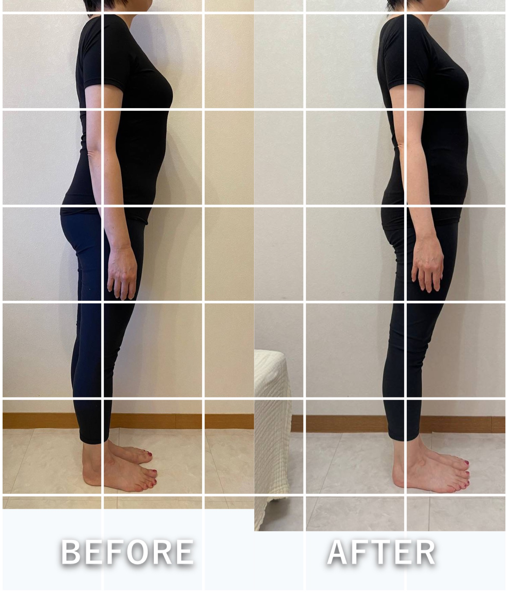

Be Grace
YOUR BODY'S VOICE
カラダの声を、受け取ってくれて
ありがとうございます。
ここまで進んだあなたは、もう
「本当の自分を、整えたい」と感じはじめています。
その気持ちは、とても大切なサインです。
「本当の自分を、整えたい」と感じはじめています。
その気持ちは、とても大切なサインです。
Here…
でも、診断でわかるのは、
今のあなたの“傾向”まで。
今のあなたの“傾向”まで。
同じタイプでも、
カラダのクセも、毎日の過ごし方も、
整え方は人それぞれです。
ここから先は、
あなたに合う整え方へ進んでいきましょう。
Private Session
未来のカラダを整える
プライベートセッション
カラダ診断を受けた方への
無料ご招待診断結果をもとに、
今のあなたに合った整え方や、
これからどんなふうにカラダを
育てていくといいのかを、お伝えします。
今のあなたに合う整え方を
知ることで、これからの自分が、
楽しみになる時間です。
- もっと綺麗になりたい。
- もっと軽やかに動きたい。
- 好きな服を、もっと楽しみたい。
- 年齢を重ねるほど、自分を好きでいたい。
- 心も軽やかに、自分らしく生きたい。
そんな未来に向けて、
今のあなたに必要な一歩を、いっしょに見つけていきます。
Voice
実際に、変わっていった方々。
半年での変化

30代 M.K様
肋骨まわり −7㎝
肋骨まわり −7㎝
2ヶ月半での変化

M.M様
立ち仕事の足の痛みが 消えた
立ち仕事の足の痛みが 消えた
be graceメソッドを始めて2ヶ月。今まで自分の体の中まで気を配ることはありませんでしたが、「体ってすごい！」と改めて感じています。やればやるほど成果が出ることも知りました。— 40代・T.N様
焦っていた私が、ゆっくりやろうと思えたら、側湾していた背骨が真っ直ぐに。履けなくなったスカートもはけました。— 30代・S.O様
For you
あなたのカラダは今、何を求めていますか。
あなただけの読み解きを、
受け取りに来てください🤍
あなただけの読み解きを、
受け取りに来てください🤍
第1希望
第2希望
第3希望
※だいたいのご希望で大丈夫です🤍
※送信後、なおから日程調整のご連絡をさせていただきます。
お申し込み、ありがとうございます🤍
たしかに受け取りました。
このあと、なおから日程調整のご連絡をさせていただきます。
Be Grace
あなただけの、カラダの読み解きを。
あなただけの、カラダの読み解きを。